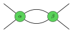
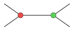
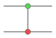
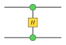

Spider Fusion (Z & X Spiders)
Z(\alpha) \circ Z(\beta) = Z(\alpha + \beta)

The foundational rewrite rule of ZX-calculus: whenever two spiders of the same color are connected by one or more wires, they fuse into a single spider whose phase is the sum of the individual phases.

Identity Wires & Phase-Zero Spiders
Z(0) = \text{id}_A
A 2-legged spider with phase 0 is mathematically identical to a straight identity wire. This rule allows inserting or removing spiders along any quantum communication channel without altering quantum state.

The Yanking Identity (Snake Equation)
(\text{id} \otimes \epsilon) \circ (\eta \otimes \text{id}) = \text{id}
The snake / yanking equation in compact closed monoidal categories. Pulling a wire with a cup and a cap tightens it into a straight wire, proving that cup and cap are dual adjoint morphisms.

Bell State Preparation & Bell Effect (Cup & Cap)
\eta: I \to A \otimes A, \quad \epsilon: A \otimes A \to I
A cup represents the unnormalized maximally entangled Bell state preparation (|00> + |11>), while a cap represents the corresponding Bell projection effect (measurement).

The Bialgebra Interaction Law
\delta_Z \circ \mu_X = (\mu_X \otimes \mu_X) \circ \sigma \circ (\delta_Z \otimes \delta_Z)

Green copy spiders commute with red XOR addition spiders via a complete bipartite cross-connection, capturing the algebraic essence of quantum linearity and copy-sum duality.

Hadamard Conjugation & Color Change
H \circ Z(\alpha) \circ H = X(\alpha)
Surrounding a green Z-spider with Hadamard boxes rotates the computational basis into the X-basis, transforming green into red while perfectly preserving the phase angle.

CNOT Gate (Controlled-NOT)
|c, t\rangle \mapsto |c, c \oplus t\rangle

The CNOT entangling gate represented as a green Z-copy dot on the control wire connected to a red X-addition dot on the target wire.

Controlled-Z (CZ) Gate
|c, t\rangle \mapsto (-1)^{ct} |c, t\rangle

A symmetric Controlled-Phase gate formed by two green Z-dots bridged by a Hadamard H-box, demonstrating the bilateral symmetry of phase entanglement.

Swap Gate (Symmetric Braiding)
\sigma: A \otimes B \to B \otimes A
The symmetry isomorphism (wire crossing) swapping two quantum subsystems without phase alteration.

Quantum Teleportation Protocol
|\psi\rangle \otimes |\text{EPR}\rangle \mapsto \text{Meas} \to \text{Correction} \to |\psi\rangle
The full diagrammatic quantum teleportation protocol: unknown state psi and an entangled Bell pair are combined in a Bell measurement; classical measurement outcomes (dashed lines) feed forward to conditionally apply Pauli X and Z corrections.

GHZ Tripartite Entangled State
|\text{GHZ}\rangle = \frac{1}{\sqrt{2}}(|000\rangle + |111\rangle)
The 3-qubit Greenberger–Horne–Zeilinger state represented as a central green Z-spider broadcasting the 0-phase state into three entangled output wires.

Entanglement Swapping Protocol
|\text{EPR}_{12}\rangle \otimes |\text{EPR}_{34}\rangle \xrightarrow{\text{Meas}_{23}} |\text{EPR}_{14}\rangle
Two initially independent entangled pairs (cups 1-2 and 3-4) undergo a joint Bell measurement (cap 2-3) on their inner qubits, creating non-local quantum entanglement between qubits 1 and 4 without direct interaction.